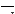
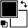

Menu d'options
-
Cet ensemble de 3
menus déroulants donne accès à
quelques réglages concernant le reste des
outils.
 Epaisseur de ligne Normalement, les lignes ont une largeur d'un pixel. Si vous voulez changer cela, cliquez et choisissez une nouvelle épaisseur (jusqu'à 8 pixels). Le crayon, la gomme, le rectangle, l'ovale, la ligne et les polygones utiliseront tous ce réglage.
Lissage Les lignes et les courbes apparaissent pixelissées à l'écran, en raison de la taille limitée des pixels. Le lissage permet d'utiliser des valeurs intermédiaires pour lisser les bords du dessin. La ligne, les polygones et l'ovale utiliseront ce réglage.
 Remplir Les formes dessinées à
l'écran sont normalement vides : leur contenu est
transparent et laisse voir ce qui était
dessiné dessous. En activant cette option, le
centre des dessins sera rempli par le motif
sélectionné (voir ci-dessous). Le
rectangle, l'ovale et les polygones utiliseront ce
réglage.
Remplir Les formes dessinées à
l'écran sont normalement vides : leur contenu est
transparent et laisse voir ce qui était
dessiné dessous. En activant cette option, le
centre des dessins sera rempli par le motif
sélectionné (voir ci-dessous). Le
rectangle, l'ovale et les polygones utiliseront ce
réglage.
Echantillon de motif
|
Cet outil permet de sélectionner un motif qui remplira les formes. Cliquez dessus afin de sélectionner l'un des 22 motifs disponibles. La couleur du motif est déterminée par les couleurs de premier et d'arrière-plan. |
|
Sélecteur de couleur
|
Cet outil vous permet de choisir les couleurs de premier-plan (le carré en haut à gauche) et d'arrière-plan (le carré en bas à droite), utilisées par les outils de dessin. Cliquez simplement sur la couleur que vous souhaitez modifier, et utiliser soit la gamme de couleurs standard (pour les icones 32-bits), soit la palette qui apparaît pour choisir une couleur. Vous pouvez également inverser les deux couleurs (double-flèche ou touche "X"), et revenir aux couleurs par défaut, le noir et le blanc (petits carrés ou touche "D"). Une autre manière de choisir des couleurs est d'utiliser la palette de couleurs. |
 |